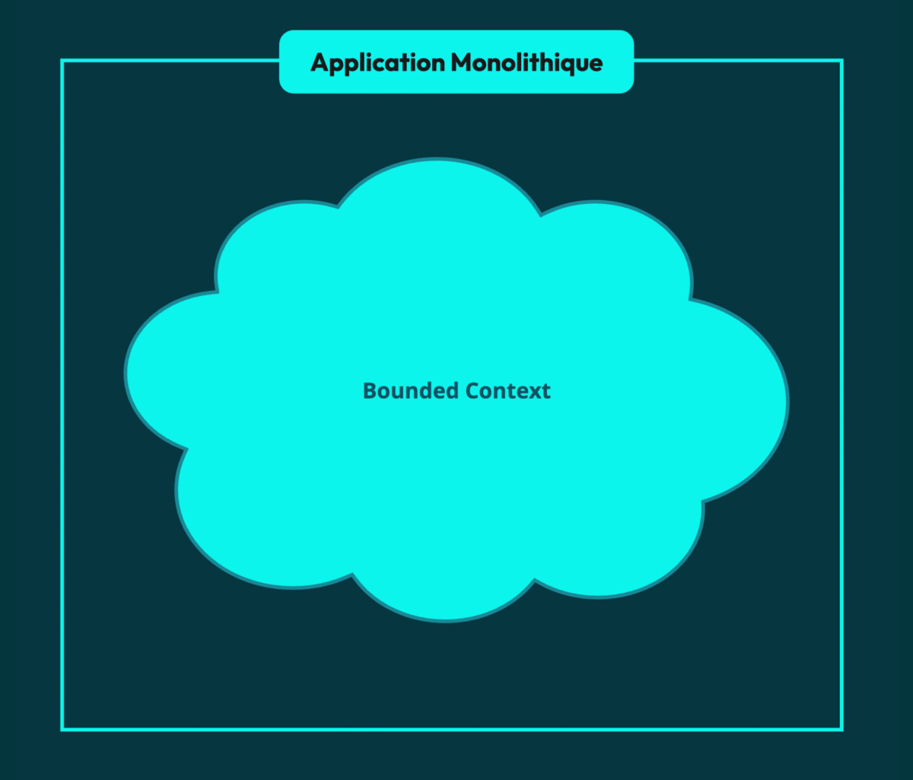
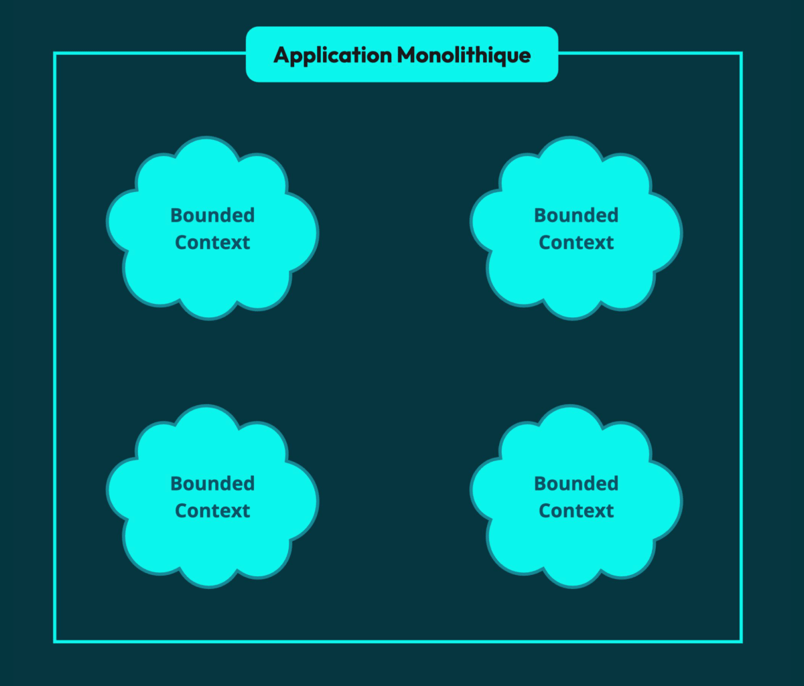
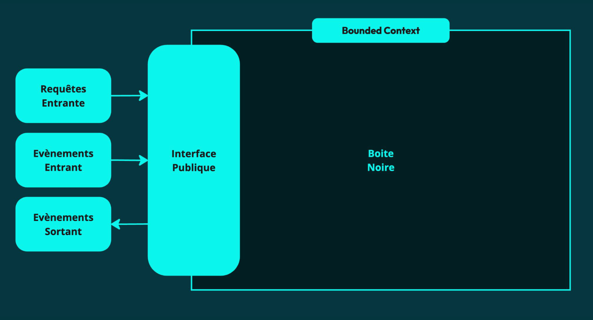
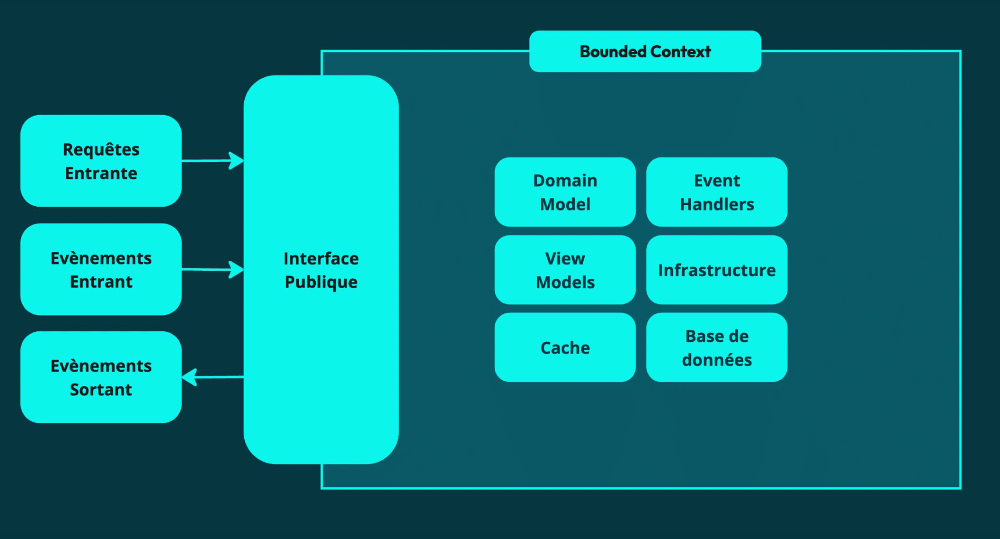
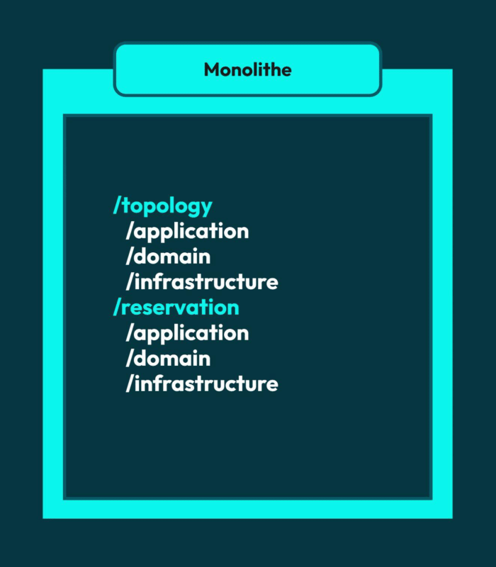
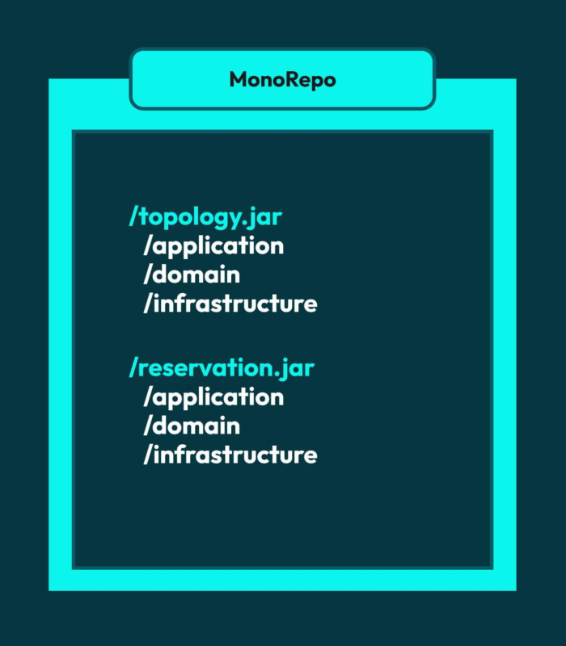
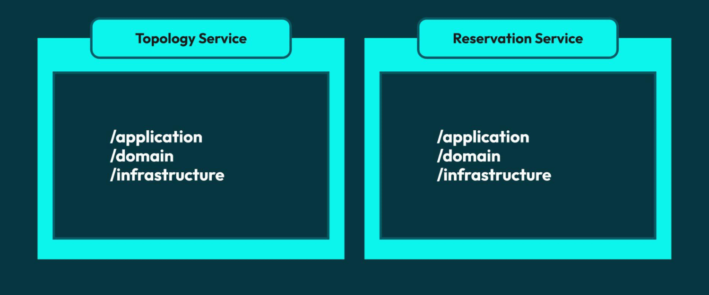
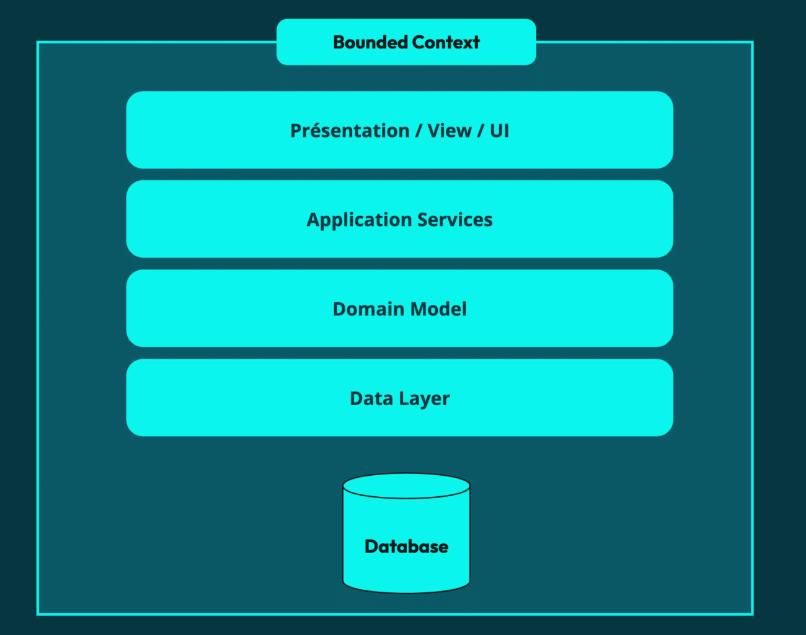

Représente un sous-système indépendant des autres sous-systèmes
Bounded Contexts = Autonomous Contexts
Objectif
Maintenir un modèle qui a vocation à devenir de plus en plus large
Objectif
Maximiser l’indépendance de développement et de déploiement


Un Bounded Context est un organisme vivant qui accepte des inputs et possède une interface publique


Les Bounded Contexts communiquent uniquement via leur interface publiqueComment se matérialisent-ils ?
Folders

Packages

Services / Microservices

La décomposition se fait autour du domain modelC’est une décomposition métierUn Bounded Context a une responsabilité sur toute la verticalité du produit

DELIMITER LES CONTEXTS
HEURISTIQUES
Relève plus de l’art que de la scienceComment savoir si notre décomposition est bonne ?
Heuristique
Lorsqu’un nouveau besoin est introduit, un seul Bounded Context est impacté
(Common Closure Principle)
Heuristique
L’équipe gérant chaque Bounded Context travaille en grande autonomie
Heuristique
Le nom du Bounded Context a du sens aux yeux des personnes non techniques
Heuristique
Les acteurs concernés par chaque Bounded Context sont clairement identifiés
Heuristique
Les changements effectués dans un Bounded Context ont peu voir aucun impact sur les autres
Heuristique
Chaque Bounded Context gère toute la verticalité d’une partie du produit (DB et UI)
Heuristique
Les communications entre Bounded Contexts sont limitées
PISTES ET INDICES
Indice
Ecouter le langage des différents parties prenantes & experts
Indice
Suivre les différents process / cycle de vie
Indice
Suivre la data et son évolution
Indice
Observer la concurrence ou d’autres secteurs similaires
Indice
Reverse Conway Maneuver : adapter l’architecture à la dynamique des communications de l’entreprise